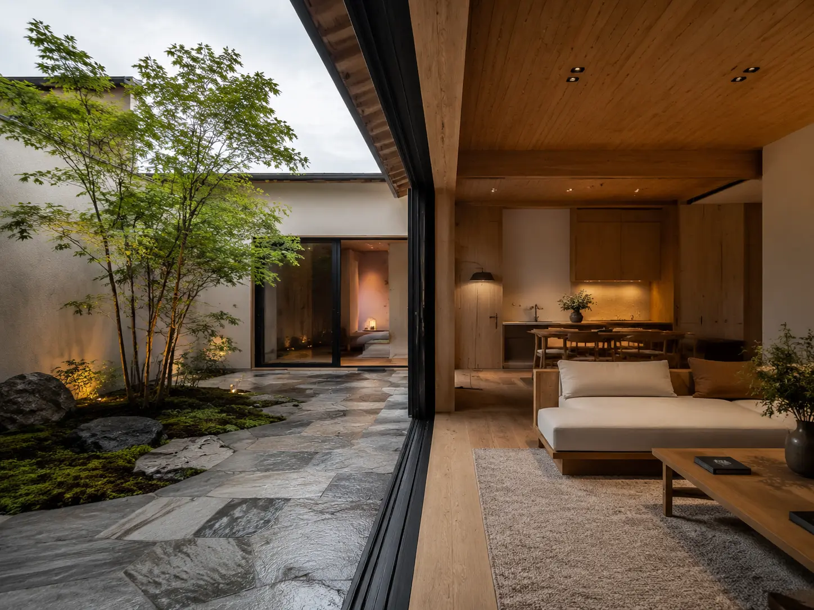

01
01
庭とリビングがつながる家
兵庫県西宮市外部空間との境目をあいまいにする深い軒庇と、四季の移ろいを引き込む大開口アトリウム。
奇飾を削ぎ落とし、素材の本質と光の影を際立たせる。RSS7 HOUSEは、敷地の個性・通風・熱流・家族の佇まいを緻密に解析し、時代を超えて美しく受け継がれる住宅を設計します。
光の射し込む角度と風の通り道を時間軸でシミュレーションし、最適な開口部を配置。
手触りのある天然木、土と和紙、無垢の金属。時を経るごとに深みを増すマテリアル。
一邸ごとに異なる環境と対話した、自由設計の実例。
01
外部空間との境目をあいまいにする深い軒庇と、四季の移ろいを引き込む大開口アトリウム。

02都市の喧騒を遮断したプライベート中庭を中心に、光と空気が回遊する静謐なコートハウス。
心地よさは感覚だけではない。高度な断熱性能・気密構造・耐震計算という数値的根拠に支えられた、真の住み心地をご提供します。
外気温の影響を遮り、年中快適な室温を維持。
全棟で気密測定を実施し、隙間を徹底抑止。
許容応力度計算により最高レベルの構造安全性を確認。
※ 掲載している性能値はコンセプトデモ用の想定仕様です。実際の性能・測定条件・標準仕様を示すものではありません。
対話から着想し、完成まで一過性のない設計プロセス。
理想の暮らし方のビジョンやご予算をお聞きし、敷地の風土・光・周辺環境を多角的に分析します。
建築家が敷地の特性を活かした独自の空間構成をご提案。概算見積りと共に総合計画を練り上げます。
ディテール・素材・照明・設備を細部まで選定。現場監督と建築家が密に連携し品質管理を行います。
お引き渡し後も、定期点検と迅速なサポートシステムを通じて、世代を超えて住まいを見守ります。
住まいづくりを始める前の一般的なご疑問にお答えします。
はい。土地の傾斜、隣地の景観、光の通り方など、建築家の目線から住まいづくりに最適な土地の選び方をご案内いたします。
初回のご相談から竣工・お引渡しまで、標準的に10ヶ月〜14ヶ月程度のお時間をいただいております。ご要望の規模により変動します。
初回の敷地見学や暮らしのご相談、およびモデルハウスでのご案内はすべて無料です。お気軽にお問い合わせください。
モデルハウス見学・建築無料相談は、完全予約制にて随時承っております。
※ このフォームはコンセプトデモです。入力データがサーバーに送信・保存されることはありません。